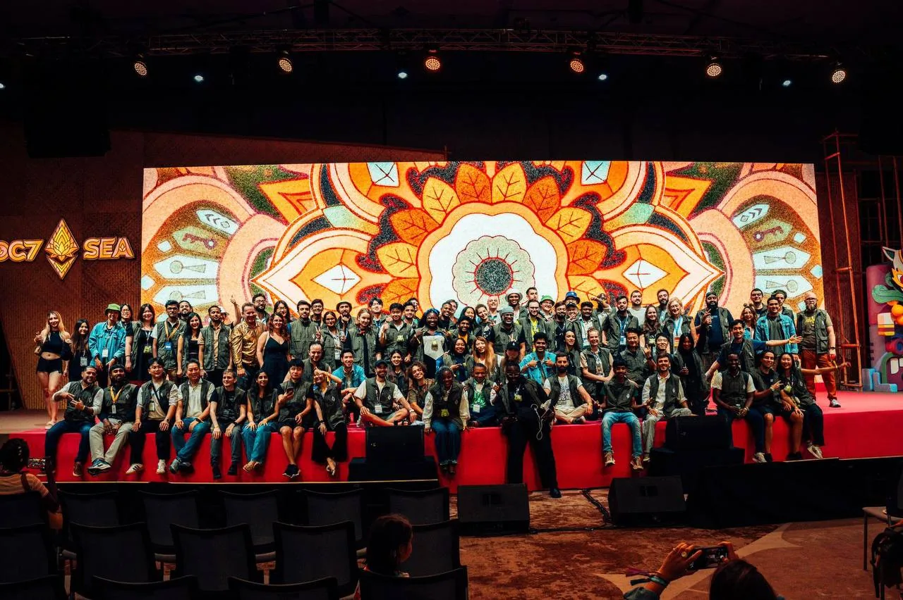

Home / Practical essentials
Before you go
Practical essentials
The small things that make a long shift easier: emergency numbers, health, food, what to carry and tips for coming from out of town.
At a glance
Shifts are long and the venue is large. This page covers the basics that are easy to forget until you need them. It complements the volunteer FAQ, the transport guide and the Mumbai guide.
Save the emergency numbers, bring comfortable shoes and a water bottle, eat the meals provided, and tell your lead early if anything goes wrong.
Emergency numbers
| Number | For |
|---|---|
| 112 | India's single emergency number. It connects to police, fire and ambulance, and works by call, SMS or the 112 India app. |
| 100 | Police |
| 101 | Fire |
| 102 or 108 | Ambulance |
| 181 | Women's helpline |
| 1091 | Women police helpline |
If it is an emergency inside the venue, tell the nearest volunteer lead or staff member as well, so the event team can respond and meet the ambulance. Save support@devcon.org and your lead's Telegram for non-urgent problems. The official guide's safety section summarises national travel advisories.
Health and first aid
- The Asian Heart Institute is inside Bandra Kurla Complex, and Lilavati Hospital is in Bandra West, about 3 km from the venue by road.
- Bring any medicines you take regularly, in their original packaging, plus a small supply of basics such as pain relief, oral rehydration salts and plasters.
- If you have an allergy or a condition, tell your lead before your first shift, so they know what to do if you feel unwell.
- Wash your hands before eating and drink bottled or filtered water. Be careful with ice and street food if you are not used to it, especially in the first days.
- If you feel dizzy or unwell on shift, stop and tell your lead. They arrange breaks and can swap you out.
Where the first aid point is inside the venue, and which nearby pharmacies are open, are not confirmed yet. Mumbai TBC
Food and water
- Volunteers get breakfast with the morning shift, lunch with either shift, and heavy snacks after the afternoon shift, with snacks and drinks free all day at the venue food and beverage stations. See the FAQ.
- Tap water is not safe to drink, including for brushing your teeth. Use sealed bottled water, with brands such as Bisleri, Aquafina and Kinley available almost everywhere, and avoid ice unless you are sure it is made from purified water. Delivery apps such as Blinkit, Zepto and Swiggy can bring sealed water to your hotel.
- For street food, fully cooked food served hot is safest. Start with busy stalls where the food is cooked in front of you, and try vada pav, pav bhaji, bhel puri and thali.
- Tell the team about dietary needs in advance. Vegetarian, vegan, Jain and halal options are common in Mumbai.
- Jio World Drive, a nearby mall in BKC, has a food court and a large number of cafes and restaurants for time off. Check how far it is from the venue before you plan a break there. Mumbai TBC
- For where to eat in the city, see the Mumbai guide, or search Google Maps for restaurants near the venue. These are local places and not recommendations.
- The official Devcon travel guide names these near the venue. At Jio World Drive: SodaBottleOpenerWala, Foo, Smoke House Deli and Harajuku Tokyo Cafe. In BKC: Gajalee and Masala Library. Bandra West, about 15 minutes away off-peak, has the city's best concentration of reliable restaurants. See the food and water notes in the official guide.
Be a little selective with street food, especially at places that do not look very hygienic. And do not always go for the absolute cheapest option. Spending a little more at a good place can save you from regretting your life the next day.
A Mumbai local
Venue rules and access
- There is no dress code, but the rule is no shirt, no shoes, no entry.
- Weapons, drugs, drones and animals are not allowed inside the venue, and smoking or chewing tobacco is prohibited.
- The venue is accessible to attendees with disabilities.
- Sessions are recorded and streamed on Devcon's YouTube channel for people who cannot attend in person.
- Attendees with discounted tickets (local, builder, student and youth) show ID at registration. Everyone else enters with their ticket QR code.
- Anyone under 16 must be accompanied by a parent or guardian with a ticket. A local childcare service, KLAY, is about 2.4 km from the venue, roughly 8 minutes by car depending on traffic, with a discount for attendees.
These come from the official Devcon FAQ, which is worth a read for attendee questions you may be asked.
Paying in India
- Visa and Mastercard are widely accepted. Amex is less reliable outside luxury hotels.
- Cash is still useful for autos, street food and small shops. ATM brands include HDFC, ICICI, SBI and Kotak.
- UPI is India's dominant payment method, and QR codes are everywhere from restaurants to street stalls. Foreign visitors can use it through a UPI One World app such as CheQ or Mony, or the IDFC First Bank app.
- Setup is KYC with your passport and visa, either at an airport kiosk in international arrivals or digitally in the app. Then you load the wallet with an international card or cash, scan any UPI QR code and pay with your PIN.
- Google Pay and PhonePe are convenient, but they generally need an Indian bank account. Without one, use a UPI One World app, or keep a card and some cash with you.
- Refund any unused balance to your original card before you leave India. It must be done before departure. The official guide says there are no onboarding or transaction fees.
Setting up UPI One World, step by step
- Download the CheqUPI by Transcorp app. The official guide also names Mony and the IDFC First Bank app.
- Sign up and enter your details.
- Upload your passport and Indian visa, then take a selfie for KYC.
- Set your UPI PIN.
- Load the wallet with your international debit or credit card.
- Scan any normal UPI QR code and pay.
You can also sign up in person with an authorised UPI One World provider at designated airports, including the kiosk in international arrivals. Do the setup before your first day on shift, and refund any unused balance before you leave India.
You can actually use UPI even if you are a foreigner. Get a UPI One World app, upload your passport and Indian visa, take a selfie for KYC, set your UPI PIN, and load it with your international card.
A Mumbai local
If you plan to buy, sell or trade digital assets in India, understand the Indian legal and tax requirements first. The rules are changing, and the official guide recommends advice from a qualified professional. See the payments section of the official travel guide.
What to carry on shift
- Your ticket or volunteer confirmation, and a photo ID.
- Comfortable closed shoes and light, comfortable clothing, with the volunteer swag worn on top. You will be on your feet for hours.
- No laptop is needed. The Volunteer Room has no secure lockers, so leave valuables at your accommodation and keep only what you need on you.
- A refillable water bottle.
- A fully charged phone and a power bank. Telegram is how the volunteer team communicates.
- A light jacket, since the venue air-conditioning can get cold after hot outdoor spaces. For the weather in Diwali week, see the Diwali guide.
- A little cash in small notes, and a card or UPI. Bandra Kurla Complex is Mumbai's financial district, with ATMs and branches of major banks in the buildings and along the surrounding streets, so topping up is easy. Banks with a presence in BKC include State Bank of India, ICICI Bank, Bank of India, Bank of Baroda, Punjab National Bank, Canara Bank and Kotak Mahindra Bank. Bank of India (C-5) and Bank of Baroda (C-26) both have branches in G Block, the same block as the venue.
- A small bag. Large luggage is a problem on a crowded floor. Mumbai TBC
Air quality and masks
November to February is historically Mumbai's worst window for air quality, because the dry season removes the rain that normally clears the air. That does not make the venue days unsafe, and most of your time will be indoors. The official guide suggests packing a basic N95-style mask, and wearing it outdoors in BKC and along heavy-traffic roads if you are sensitive. Masks matter most if you stay for Diwali, when firework smoke adds to the load for a few days afterward. More in the safety section of the official guide.
Looking after yourself on shift
- You can take up to two breaks of 15 to 20 minutes per shift, coordinated by your Volunteer Lead. Use them, and return on time.
- Eat and drink at the times you are given, even if it is busy.
- Sleep matters. The 7 am check-in for the morning shift (see the shift times) means an early night, particularly if you are commuting a long way. Get lots of sleep before the event, because it is harder during.
- Expect a lot of walking. A Bangkok volunteer lead logged nearly 100,000 steps, about 50 km, over the 4 to 5 days of Devcon 7, so break your shoes in before you arrive.
- Keep watch for chances to help attendees and other volunteers, even outside your own post.
- If something goes wrong, escalate early to your lead rather than handling it alone.
- To report a problem or a code of conduct issue, follow the steps in the code of conduct and tell your lead.
Landing at the airport
A first-hand account from a traveller who recently landed in Mumbai on a first visit to India, after a very long travel day. Procedures change, so treat it as a walkthrough of what to expect and check the current requirements before you fly.
- Bring a printed copy of your ETA or visa. This was the traveller's number one tip.
- First-time visitors enrol their biometrics before immigration. The booths are on the left as you walk towards the immigration hall, and it takes about 2 minutes.
- Foreign passport holders queue at the far end of a very large hall. Before you join a queue, look for the small red airport Wi-Fi point. It is free if you register with your passport and boarding pass, and you will need it if you have no data yet.
- While you queue, complete two online forms: a health self-declaration and an online arrival card. Much of what they ask repeats your visa application, including your recent travel history. Keep both pages open to show the immigration officer with your passport, visa and boarding pass.
- Expect a few questions about what you are doing in India. Answer truthfully and match your visa and your Devcon plans.
- There is an ATM just outside immigration, and you can change a little cash. An Airtel shop is in the hall. If you can wait, the Vi (Vodafone Idea) and Jio stores outside may have better SIM deals, and the eSIM options below avoid the queue altogether.
Getting an Uber from the arrivals hall
- On the right side of the arrivals hall is a row of booths. The one at the right-hand end is Uber, and the staff will help you book.
- To reach the pickup, leave by Gate B in the middle, cross the road, walk into the car park and go up one flight of steps to P7 West.
- It is chaotic. Check the number plate of the car you were assigned, and look for it near the posts marked 17B, C or D and 10B, C or D. The PIN in the app is the code that tells the driver where you are, and it is much easier with data on.
- The Aqua Line (Metro Line 3) also runs from the airport into the main part of Mumbai, and it is the easiest way to cover most of the city. Use it for the main leg of a trip, then finish with an Uber or Rapido. See the Metro guide.
- Ola is listed in the official guide, but the app is only offered on the Indian Google Play Store, so it will not install if your account is set to another country. Plan on Uber or Rapido.
The official guide's arrival notes add the Devcon Welcome Booth in Terminal 2 arrivals. The traveller above did not say which terminal they used, so check which one your flight lands in. Mumbai TBC
Coming from another city
- Book travel and a place to stay early. Devcon overlaps Diwali, so trains, flights and rooms fill up months ahead.
- Choose where to stay by the commute, not the neighbourhood. Somewhere close to a Metro Line 3 station saves a lot of time. See the transport guide.
- Ask in the Devcon Telegram group if you are unsure about a place, and for people to share rooms with.
- Rooms near Jio World Centre run from about 10 minutes away at dawn to 45 minutes at 6 pm for the same 3 km. The official guide gives rough commutes: Bandra and the western corridor 10 to 45 minutes, central Mumbai (Lower Parel, Dadar) and Andheri 15 to 25 minutes, South Mumbai 30 to 40 minutes. It generally recommends established hotel chains.
- For a late arrival, Niranta Transit Hotel connects directly to Terminal 2 of the airport. The official guide lists it, so check current rates and terms. More options are in where to stay.
- The official guide advises avoiding Dharavi at night, Kamathipura, Falkland Road, and dimly lit bylanes or isolated spots after 10 pm.
- Hindi, Marathi and English are all widely used in Mumbai, so most people will understand you in at least one.
- The in-person training and Volunteer Welcome reception is on Sunday 1 November, so plan to arrive by then. Reach the venue between 1:00 and 1:30pm with a photo ID for your wristband and accreditation. Monday 2 November is a pre-registration day, with optional volunteer support at registration and the swag station. Special event passes are not available to volunteers.
- Travel and lodging are your responsibility under the Devcon terms.
Staying in touch
Volunteer communication runs through Telegram. Message Ornella (@OrnellaWeb3) for questions, and tell your lead straight away if you are late or unwell. Share your plans with a friend or family member back home, and keep your phone with you.
The official travel guide lists Kokio and Airalo travel eSIMs, or you can buy a local SIM. Confirm your phone is unlocked and eSIM-compatible, and install before you fly while still on your home network. If data stops, toggle Airplane Mode off and on, and if hotel Wi-Fi asks for an OTP you may need a physical Airtel SIM. Android users should download the Airalo app before the trip. See the connectivity section, or go to Kokio or Airalo.
Still to confirm
These items stay marked until the Devcon team confirms them.
- Where the first aid point and the Volunteer Room are inside the venue.
- Which pharmacies are closest to the venue gates.
- The exact times for meals and the Volunteer Room check-in process.
- Phone charging points for volunteers.
Also in the Mumbai guides
Mumbai guide
What the city is known for, where to eat, and what to see on a day off.
Open the guide →Traffic and transport
Metro Line 3, peak-hour traffic and a commute plan for each shift.
Open the guide →Diwali in Mumbai
The dates, the lights, the fireworks rules and the weather.
Open the guide →